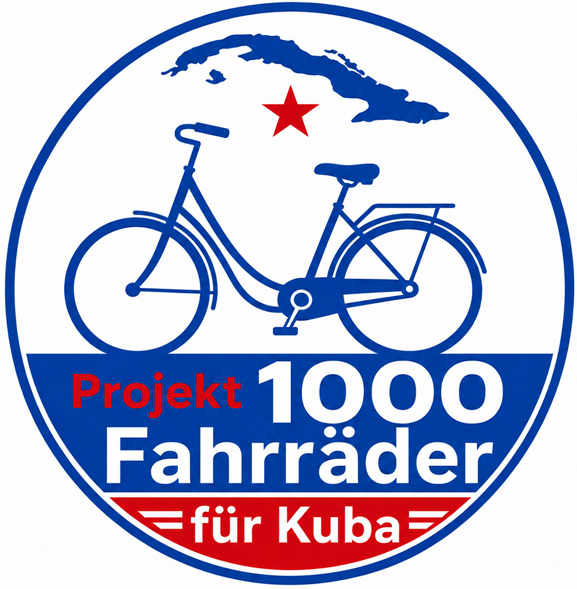
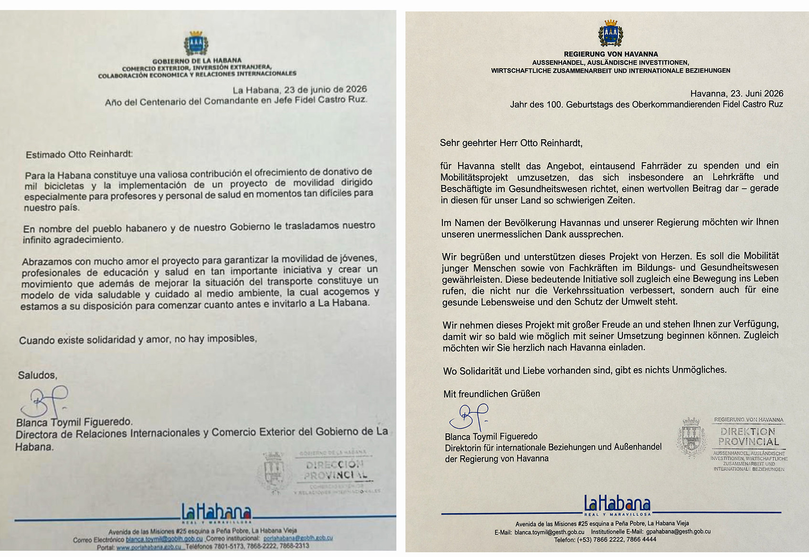
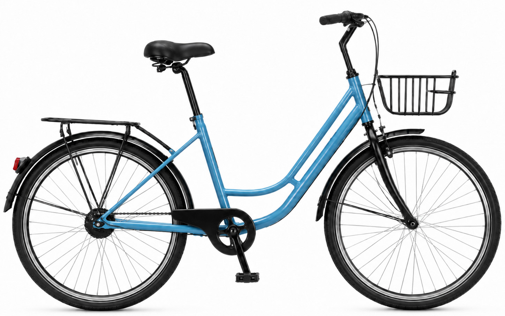
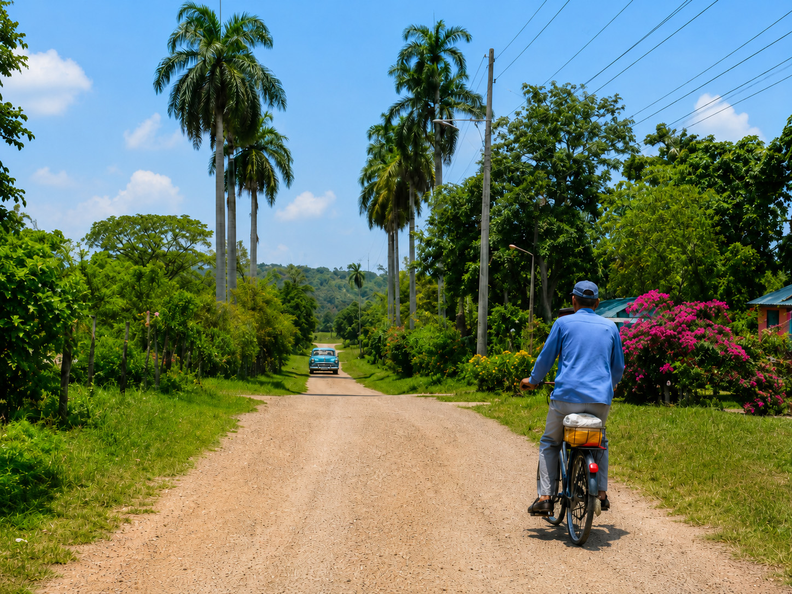
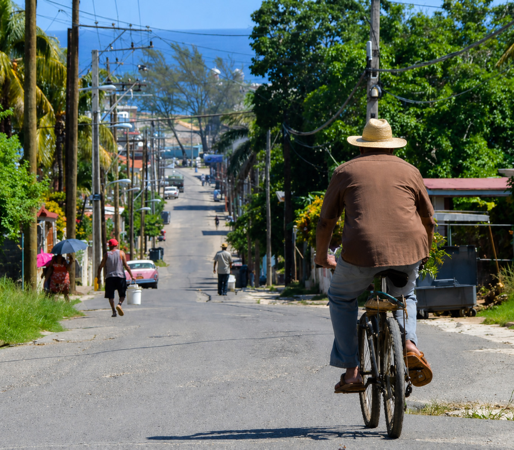
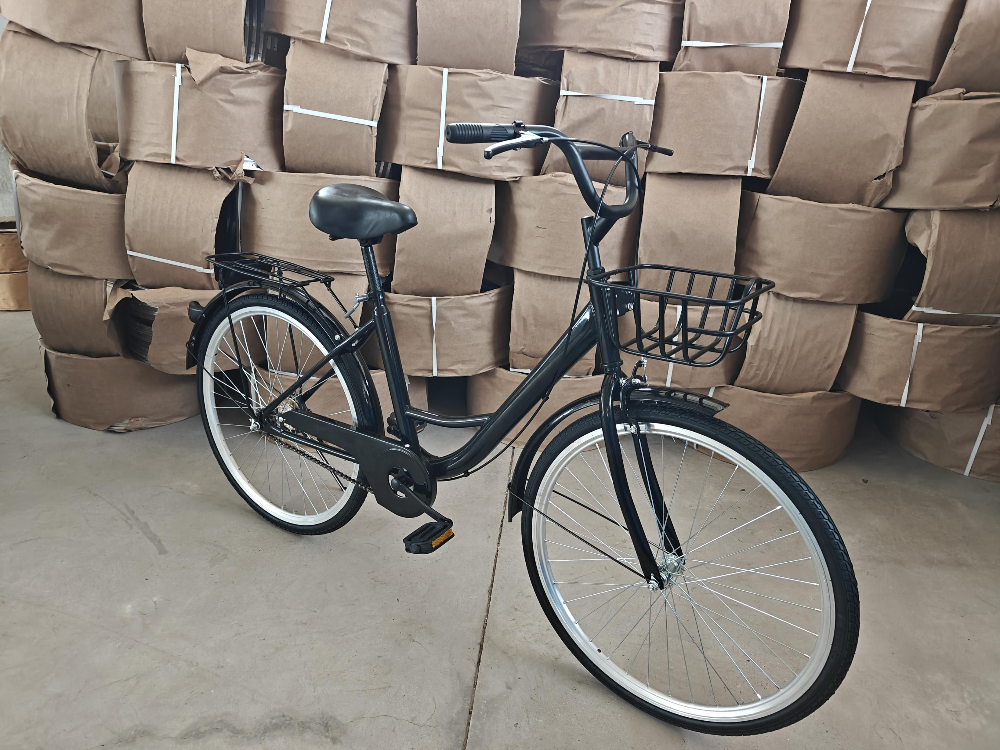
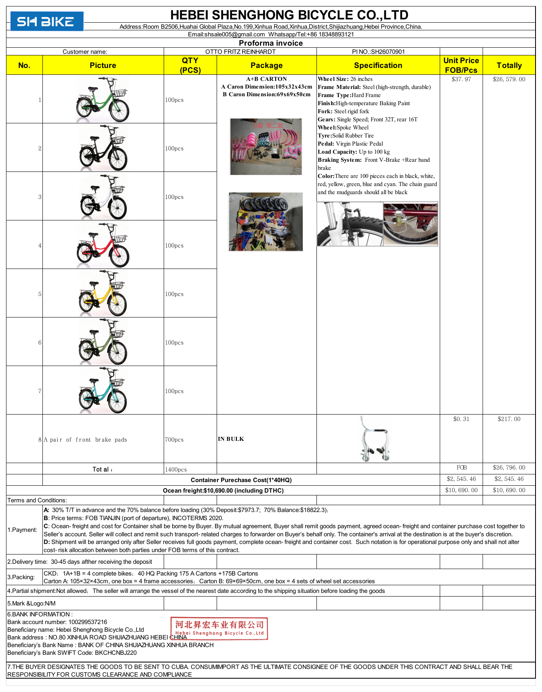
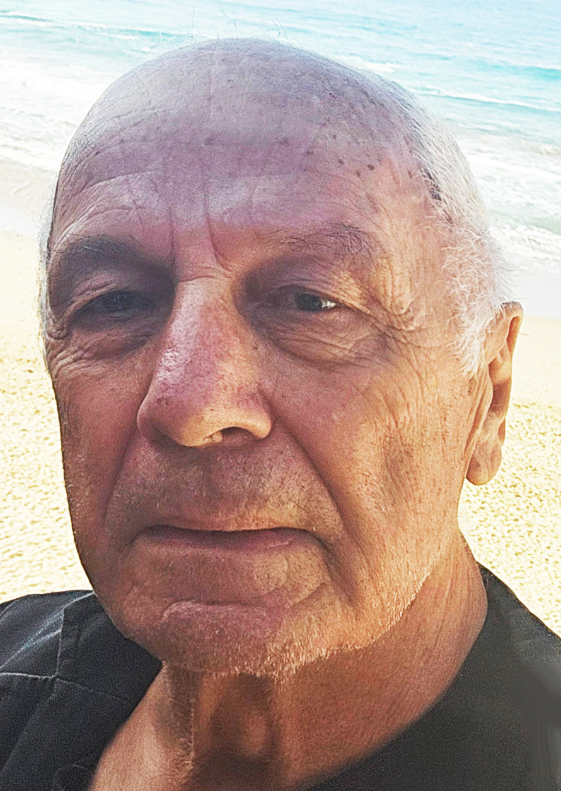

1000 Fahrräder für Kuba
Das Projekt bringt robuste, einfach zu reparierende Fahrräder nach Kuba -
für Menschen, die täglich zur Arbeit, zur Schule oder zur medizinischen
Versorgung gelangen müsssen.
01
Warum Fahrräder gerade jetzt einen Unterschied machen
Kuba in großer Not |
|
Die Versorgung ist vielerorts schwierig. |
Ich war oft in Kuba - zum Salsa tanzen, Fahrrad fahren und Spanisch lernen.
Zuletzt 2020. Seitdem hat sich die Lage stark verschlechtert. Meine Kontakte
und Freunschaften vor Ort sind der Grund, nicht nur zuzusehen, sondern zu
handeln.
Der Projektname ist ein Ziel und ein Signal. Ein Container fasst nach aktueller
Plannung etwa 700 Fahrräder in Einzelteilen. Die Endmontage erfolgt in Kuba.
Der Weg zur Arbeit wird wieder möglich - besonders für Lehrkräfte,
medizinisches Personal und soziale Berufe.
Weniger Abhänigkeit von Bussen, Sammeltaxis und knappen Kraftstoffen.
Robuste, einfache Technik erleichtert Wartung und Reparatur vor Ort.
Mobilität schafft Selbstständigkeit, Zeitgewinn und neue Hoffnung.
02
Von der Abstimmung bis zur Verteilung in Havanna
|
 |
|
Schreiben der Regierung von Havanna vom 23. Juni 2026 - Original und Deutsche Übersetzung |
| Bereich | Kontakte/ Aufgaben |
|
Kuba |
Aleida Maria Ramos Sostre, ehemalige Lehrerin und langjährige Bekannte in Havanna.
Blanqua Toymil Figueredo („Blanquita“), Direktorin für Internationale Beziehungen der Regierung Havanna. |
|
Kubanische Botschaft |
Oficina Berlin - Herr Alejandro Valdez - Oficina-berlin@botschaft-kuba.de |
|
China |
Diverse Fahrradproduzenten; geplanter Lieferant: Hebei Shenghong Bicycle Co. Ltd, Xinhua, Provinz Hebei. |
|
Deutschland |
Abstimmung mit Finanzamt, Steuerberater und Bank; Organisation von Finanzierung, Transport und Projektkommunikation. |
| 1 |
2 |
3 |
4 |
| Produktion |
Vorlauf |
|
|
| Fahrräder China in fertigen und transportsicher vorbereiten. |
Etwa eine Woche für Abstimmung, Verpackung und Übergabe an den Transport. |
Etwa vier bis sechs Wochen Schiffstransport von China nach Kuba. |
Entladung, Transport nach Havanna, Endmontage und Übergabe. |
Zeit ist entscheidend |
|
Die Vorbereitung sind weit fortgeschritten und die kubanische Seite ist eingebunden. Produktion und Transport benötigen dennoch mehrere Wochen. |
03
Transparent Kalkuliert - Jeder Beitrag zählt
| 50 € |
Mit 50 Euro werden Sie Förderer, Pate oder Sponsor eines Fahrrads. |
|
pro Fahrrad inklusive Fracht |
Auch kleinere und größere Beiträge helfen. Entscheidend ist, dass aus vielen Beiträgen ein kompleter Container entsteht. Es gibt keine Verwaltungskosten. |
| Positon | Betrag |
| 1 Container mit ca 700 Fahrrädern in Einzelteilen | 23.390 € |
| Fracht- und Containerkosten | 10.500 € |
| Gesamtsumme | 33.890 € |
Empfangsbestätigung über den Betrag (nicht steuerlich
absetzbar).
Auf Wunsch eine Urkunde als Erinnerung an die Unterstützung.
Sofern vor Ort möglich: die Kontaktadresse eines begünstigten Menschen.
Ein zusätzlicher Container wäre der nächste Schritt - idealerweise mit
Kinderfahrrädern. Bei Rückfrage per Mail erfährst du den aktuellen finanziellen Stand der Dinge .
Das Wichtigste |
|
Ein Fahrrad schenkt nicht nur Mobilität, sondern Zeit, Selbstständigkeit |
04
Robust Geplant - Langfristig Gedacht

| 26 Zoll |
Ohne Schaltung |
Vollgummireifen |
Damenrahmen für ein breites Spektrum an |
Weniger Verschleißteile, einfache Bedienungen und |
Keine klassichen Reifenpannen; robust im |
Identische Teile |
Passende Übersetzung |
Mehrere Farben |
Einheitliche Achsen, Tretlager und Komponenten |
Kompromiss zwischen leichteren Hügeln und |
Technisch identisch - nur die Rahmenfarbe |
Rahmen und Bauweise |
|
| Radgröße | 26 Zoll |
| Rahmenmaterial | Hochfester, langlebiger Stahl |
| Rahmentyp | Starrer Damenramen |
| Lackierung | Hochtemperatur- Einbrennlackierung |
| Gabel | Starre Stahlgabel |
Antrieb und Räder |
|
| Schaltung | Singlespeed, ohne Gangschaltung |
| Übersetzung | Vorne 32 Zähne, hinten 16 Zähne |
| Laufräder | Speichenräder |
| Reifen | Vollgummireifen |
| Pedale | Robuste Kunststoffpedale |
Sicherheit und Transport |
|
| Bremsen | Vorne V-Brake, hitnen Rücktrittbremse |
| Tragfähigkeit | Bis 100kg |
| Transportform | Teilzerlegt in zwei Kartons |
| Karton A | 105 x 32 x 43 cm |
| Karton B | 69 x 69 x 50 cm |
Grundlage: Herstellerangebot der Hebei Shenghong Bicycle Co,. Ltd vom 9. Juli 2026. Vorgesehen sind 700 Fahrräder.
Topographie, Klima und die geringe Zahl verfügbarer Autos machen das Fahrrad zu einem naheliegenden Verkehrsmittel. Langfristig könnte daraus auch ein sanfter Fahrradtourismus entstehen – dezentral, ressourcenschonend und nah am Land.


27.08.2026 Mein erster Bericht zum bisherigen Verlauf
Nach viel Planung und Recherche startete das Projekt am 1.
August 2026 in der Öffentlichkeit. Zu diesem Zeitpunkt war die
Webseite fertiggestellt.
Erste wichtige Schritte waren:
Bis heute sind durch 60 Überweisungen rund 16.000 Euro
zusammengekommen.
Die bereits geplanten Maßnahmen und die zunehmende
öffentliche Aufmerksamkeit werden hoffentlich zu weiteren
Einnahmen führen. Ich bin optimistisch: Bislang entwickelt sich
alles wie erhofft.
Ich bin sogar vorsichtig zuversichtlich, dass bald auch das
geplante Folgeprojekt „1.000 Kinderfahrräder für Kuba“
beginnen kann.
Stand am 26. August 2026
Am 15. Juli 2026 habe ich eine Anzahlung von 30 Prozent des
Warenwertes – 7.000 Euro – überwiesen. Daraufhin begann in
China die Produktion der Fahrräder.
Die Produktion ist inzwischen abgeschlossen. Die Fahrräder
sind versandfertig und alle erforderlichen Dokumente wurden
vorbereitet.
Der Warenverkehr nach Kuba ist zurzeit vor allem durch das
US-Embargo, dadurch weniger Schiffsverbindungen sowie
hohe Transportkosten und logistische Engpässe stark
beeinträchtigt.
Die chinesische Seite bemüht sich gemeinsam mit den
kubanischen Partnern darum, den Container so schnell wie
möglich auf ein Schiff zu bringen. Mir wurde versichert, dass es
sich lediglich um eine Verzögerung von wenigen Tagen
handelt.
Sobald der Container verladen wird, erhalte ich die
Endabrechnung und werde den noch offenen Betrag
umgehend überweisen. Dann werden die Fahrräder auf den
Weg nach Kuba geschickt.
In Kuba werden sie bereits sehnsüchtig erwartet. Auch der
chinesische Hersteller möchte die Ware schnellstmöglich
versenden, den Restbetrag erhalten und sich durch sein
Engagement für weitere Aufträge empfehlen.
Ich hoffe, dass ich bereits in den nächsten Tagen über den
erfolgten Versand berichten kann.
Sobald es Neuigkeiten gibt, werde ich euch selbstverständlich
umgehend informieren.

JETZT GEHTS LOS
Beladung des Containers am 31.8. und 1.9.
Fahrt zum Hafen Tianjin
Verladen des Containers auf das Schiff
Schiffsname PLUTUS L: VFW 2606
Frachtbrief Nr. (B/L): PLTM 266302
Abfahrt des Schiffes: Samstag 5. September
Dauer der Fahrt momentan wegen Panama Kanal
nicht punktgenau planbar - ca. 50 Tage
Die 700 Paar Bremsklötze
sind pro Fahrrad 1 Paar Ersatzklötze.
Den Container kauft der Produzent der Räder auf meine Kosten,
nach Entladung geht er an die Kubaner.
Es folgt die Proforma Rechnung, das Einzelfahrrad mit den
Felgenpaketen im Hintergrund ist weitgehend identisch mit
den zu versendenden Modellen.

Kontakt Unterstützung

BW Bank Stuttgart
IBAN: DE25 6005 0101 7861 0024 08
Verwendungszweck: 1000 Fahrräder für Kuba
Vielen Dank für jede Form der Unterstützung und Weiterempfehlung.